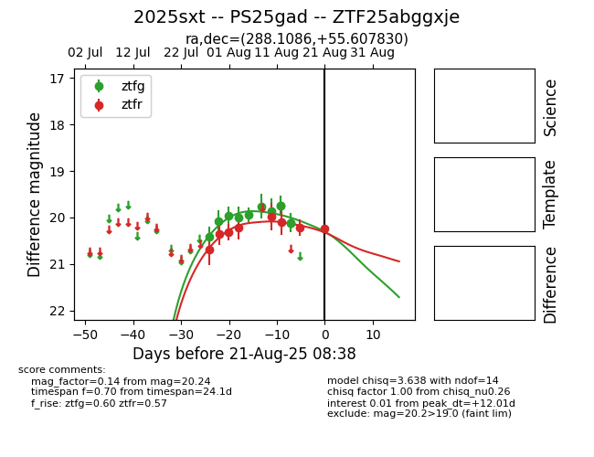

Target 2025sxt at 2025-08-21 10:32, see:
FINK: fink-portal.org/ZTF25abggxje
Lasair: lasair-ztf.lsst.ac.uk/objects/ZTF25abggxje
ALeRCE: alerce.online/object/ZTF25abggxje
TNS: wis-tns.org/object/2025sxt
YSE: ziggy.ucolick.org/yse/transient_detail/2025sxt
alt names
ZTF25abggxje (ztf,alerce)
2025sxt (tns,yse)
PS25gad (panstarrs)
coordinates:
equatorial (ra, dec) = (288.1086,+55.60783)
galactic (l, b) = (86.3531,+19.28591)
photometry
last ztfg=20.12, ztfr=20.24
11 ztfg, 8 ztfr detections
